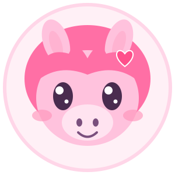
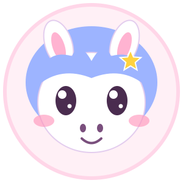
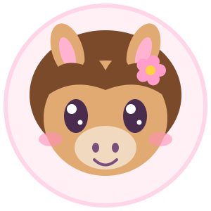

Ponik listája
| Kép | Név | Szín | Kor | Kedvenc étel |
|---|---|---|---|---|
 |
Pillecukor | Rózsaszín | 4 év | Alma |
 |
Csillag | Fehér | 6 év | Répa |
 |
Szivárvány | Lila | 3 év | Cukorka (csak ritkán!) |
 |
Mogyoró | Barna | 8 év | Zab |
 |
Habos | Zöld | 2 év | Sárgarépa |
 |
Napocska | Sárga | 5 év | Alma |
Nincs a keresésnek megfelelő poni. 😢
Többet szeretnél tudni a ponikról?
Olvass tovább a Wikipédián, vagy nézd meg a galériánkat.